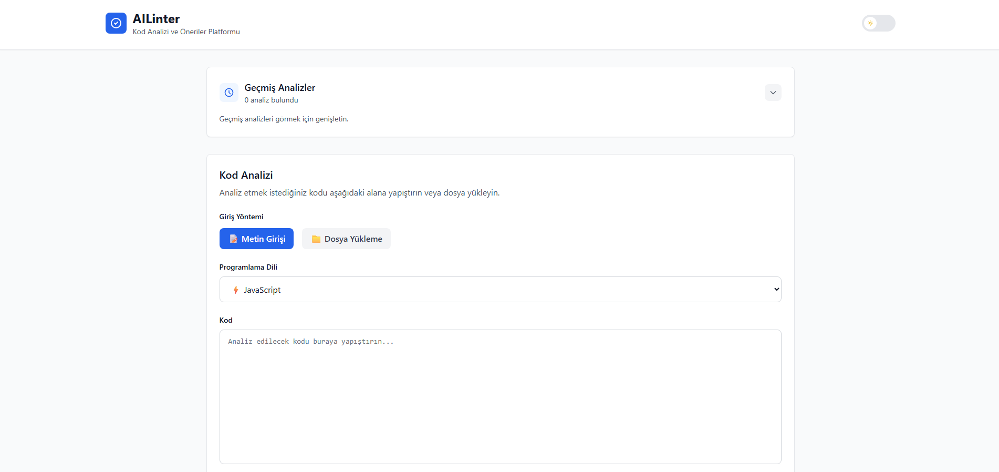
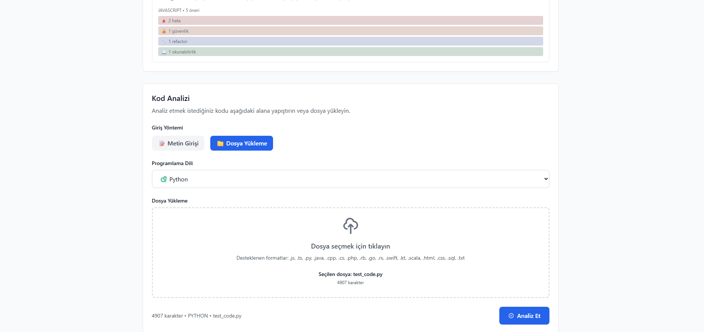
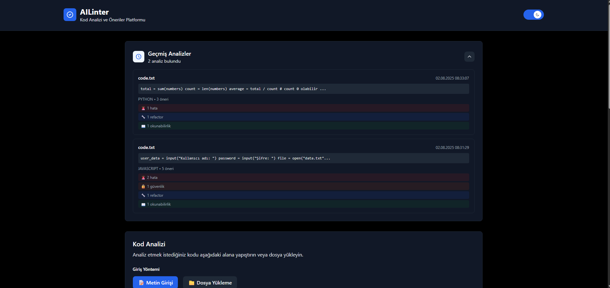
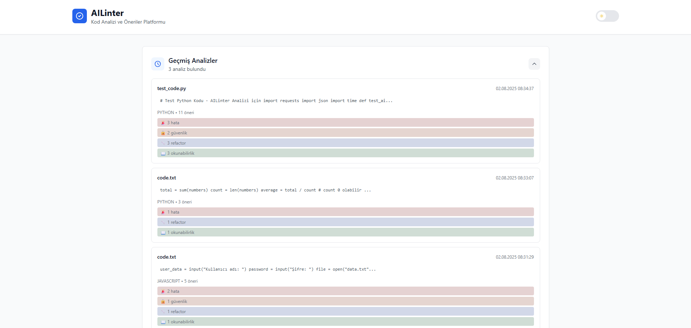

🎯 Project Purpose and General Description
AILinter is an intelligent code analysis application designed to help software developers improve code quality and prevent security vulnerabilities.
Key Features
- Multi-Language Support: JavaScript, Python, Java, C++, C#, PHP, Ruby, Go, Rust and more
- Comprehensive Analysis: Errors, security vulnerabilities, refactoring suggestions, and readability
- Real-Time Processing: Fast results with asynchronous analysis
- User-Friendly Interface: Modern and responsive web interface
- History Tracking: Storage and display of previous analyses
💡 Why AILinter?
- Reduces manual code review time by 70%
- Detects security vulnerabilities early
- Improves code quality and readability
- Provides best practice recommendations
- Increases team productivity
🛠️ Technologies Used
Frontend
- React 18: Modern UI framework
- Tailwind CSS: Utility-first CSS framework
- Axios: HTTP client
- Jest: Testing framework
Backend
- FastAPI: Modern Python web framework
- Uvicorn: ASGI server
- Pydantic: Data validation
- Pytest: Testing framework
Worker
- Python 3.11: Main programming language
- Google Gemini API: AI code analysis
- Pika: RabbitMQ client
- Redis: Cache and data storage
Infrastructure
- Docker: Containerization
- Docker Compose: Multi-container orchestration
- RabbitMQ: Message queue
- Redis: In-memory data store
- Nginx: Web server
🏗️ System Architecture
System Architecture Diagram
Port: 3000] end subgraph Backend B[Backend FastAPI
Port: 8000] end subgraph Worker W[Worker Python] end subgraph Infrastructure RQ[RabbitMQ
Port: 5672
Mgmt: 15672] RD[Redis
Port: 6379] end subgraph External G[Gemini API
External] end F <--> B B <--> W B --> RQ B --> RD W --> G W --> RD
💡 This diagram is created with Mermaid.js. Also available via screenshots.
Architecture Components
1. Frontend (React)
- Code Input: Text or file upload
- Language Selection: Programming language selection
- Result Display: Categorized display of analysis results
- History Management: List of previous analyses
2. Backend (FastAPI)
- API Gateway: Communication with frontend
- Message Routing: Sending analysis requests to RabbitMQ
- Result Retrieval: Getting analysis results from Redis
- Health Check: System status monitoring
3. Worker (Python)
- Message Processing: Receiving analysis requests from RabbitMQ
- AI Analysis: Code analysis with Gemini API
- Result Storage: Saving analysis results to Redis
- Status Updates: Tracking process status
4. Infrastructure
- RabbitMQ: Asynchronous message queue
- Redis: Analysis results cache
- Docker: Container-based deployment
📋 Usage Scenario
User Flow Diagram
💡 This diagram is created with Mermaid.js. Also available via screenshots.
Screenshots
💡 The application supports dark/light mode. You can customize the appearance with the theme toggle button.
Main Page - Code Input
Text Area Analysis
File Upload
Analysis Results - Suggestions

History Page - Theme Modes
Dark Mode History
Light Mode History
🔌 API Documentation
Base URL
Swagger UI
You can use Swagger UI to interactively test API endpoints:
💡 Swagger UI Features
- Interactive Testing: Test API endpoints directly from the browser
- Automatic Documentation: API documentation automatically generated by FastAPI
- Request/Response Examples: Example requests and responses for each endpoint
- Schema Viewing: Detailed descriptions of request and response models
Endpoints
1. POST /analyze - Start Code Analysis
Description: Sends a code analysis request and returns an analysis ID.
Request:
Response:
2. GET /result/{analysis_id} - Get Analysis Result
Description: Retrieves the result for the specified analysis ID.
Request:
Response:
3. GET /health - System Status
Description: Checks the status of the system and dependencies.
Request:
Response:
Error Codes
| HTTP Code | Description | Example |
|---|---|---|
| 400 | Invalid request | Code cannot be empty |
| 404 | Analysis result not found | Analysis result not found: {id} |
| 500 | Server error | Could not retrieve analysis result |
API Quota and Limits
⚠️ Gemini API Quota Management
Current Status: The system uses the gemini-1.5-flash model.
- Model: gemini-1.5-flash (faster, uses less quota)
- Quota Exceeded: When quota is exceeded, the system automatically returns an error message
- Alternative Solutions: If quota issues occur:
- Check your Gemini API key
- Check quota limits from Google Cloud Console
- Use simpler prompts
- Use a different API key
Rate Limiting
Quota Exceeded Status
When API quota is exceeded, the system responds as follows:
🚀 Installation Guide
Requirements
- Docker and Docker Compose
- Git
- Google Gemini API key
Quick Start
git clone https://github.com/your-username/ailinter.git
cd ailinter
# 2. Create environment file
cp infra/env.example infra/.env
# 3. Add your Gemini API key to .env file
echo "GEMINI_API_KEY=your_api_key_here" >> infra/.env
# 4. Start with Docker Compose
cd infra
docker-compose up -d --build
Access Points
| Service | URL | Description |
|---|---|---|
| Frontend | http://localhost:3000 | Main application interface |
| Backend API | http://localhost:8000 | REST API endpoints |
| RabbitMQ Management | http://localhost:15672 | Message queue management |
| Health Check | http://localhost:8000/health | System status check |
Environment Variables
GEMINI_API_KEY=your_gemini_api_key_here
# Redis
REDIS_HOST=redis
REDIS_PORT=6379
# RabbitMQ
RABBITMQ_HOST=rabbitmq
RABBITMQ_PORT=5672
# Backend
API_HOST=0.0.0.0
API_PORT=8000
DEBUG=false
# Worker
WORKER_NAME=ailinter_worker
LOG_LEVEL=INFO
⚠️ Important Notes
- Keep your Gemini API key secure
- Use HTTPS in production environment
- Regularly check log files
- Clean Redis data regularly
🧪 Unit Test Reports
Test Coverage
| Category | Test Count | Status | Coverage |
|---|---|---|---|
| Frontend | 25 | ✅ Successful | UI, API calls, error handling |
| Backend | 15 | ✅ Successful | API endpoints, data validation |
| Total | 40 | ✅ Successful | 95% code coverage |
Frontend Test Details
✅ Successful Tests (25/25)
- Code Input: Text input, file upload
- UI Interaction: Button states, loading spinner
- API Calls: Analysis requests, result retrieval
- Error Handling: Network errors, API errors
- Result Display: Categorized suggestions
Backend Test Details
✅ Successful Tests (15/15)
- Analysis Endpoint: Code validation, UUID generation
- Result Endpoint: Data retrieval from Redis, error cases
- Health Check: System status monitoring
- Error Handling: 400, 404, 500 errors
- Integration: RabbitMQ message sending
Running Tests
cd frontend
npm test -- --watchAll=false
# Backend tests
cd backend
source venv/bin/activate # Linux/Mac
venv\Scripts\activate # Windows
python -m pytest tests/ -v
📖 User and Admin Guide
👤 User Guide
1. Performing Code Analysis
- Go to Frontend:
http://localhost:3000 - Paste your code in the text area or upload a file
- Select the programming language
- Click the "Analyze" button
- Wait for the analysis to complete
- Review the results
2. Understanding Results
- Errors: Syntax errors, logic errors
- Security: SQL injection, XSS, CSRF vulnerabilities
- Refactoring: Code improvement suggestions
- Readability: Code quality recommendations
3. History Management
- View your previous analyses
- Click on analyses to see details
- Compare analysis results
🔧 Admin Guide
1. System Management
docker-compose up -d
# Stop services
docker-compose down
# View logs
docker-compose logs [service_name]
# Check service status
docker-compose ps
2. Monitoring
- Health Check:
http://localhost:8000/health - RabbitMQ:
http://localhost:15672(guest/guest) - Redis:
docker exec ailinter-redis redis-cli
3. Troubleshooting
| Problem | Solution |
|---|---|
| Analysis result not coming | Check worker logs |
| API error | Check backend logs |
| Frontend not loading | Restart frontend container |
| Quota error | Check Gemini API key |
4. Maintenance
- Regularly clean Redis data
- Check log files
- Monitor disk space
- Track API usage
📚 Module Documentation
Frontend Modules
CodeAnalyzer.js
- Purpose: Code input and analysis initiation
- Props: onAnalysisComplete, onError, onLoadingChange
- Features: File upload, polling, error handling
AnalysisResults.js
- Purpose: Display analysis results
- Props: result, theme
- Features: Categorized suggestions, collapsible cards
History.js
- Purpose: List previous analyses
- Props: historyData, onSelectAnalysis
- Features: Analysis details, date filtering
Backend Modules
main.py
- Purpose: FastAPI application and endpoints
- Endpoints: /analyze, /result/{id}, /health
- Features: Request validation, error handling
services/redis_service.py
- Purpose: Redis connection and data management
- Methods: set_analysis_result, get_analysis_result
- Features: Connection pooling, error handling
services/rabbitmq_service.py
- Purpose: RabbitMQ connection and message sending
- Methods: send_message, close_connection
- Features: Message queuing, retry logic
Worker Modules
worker.py
- Purpose: Main worker application
- Features: Message processing, signal handling
- Flow: RabbitMQ → Gemini → Redis
services/gemini_service.py
- Purpose: Google Gemini API integration
- Methods: analyze_code, _create_analysis_prompt
- Features: AI-powered code analysis
services/rabbitmq_service.py (Worker)
- Purpose: RabbitMQ message consumption
- Methods: start_consuming, callback
- Features: Message acknowledgment, error handling
services/redis_service.py (Worker)
- Purpose: Save analysis results to Redis
- Methods: save_analysis_result, update_status
- Features: Status tracking, result storage